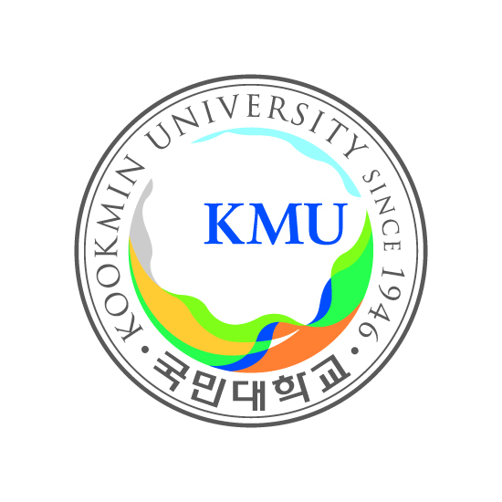
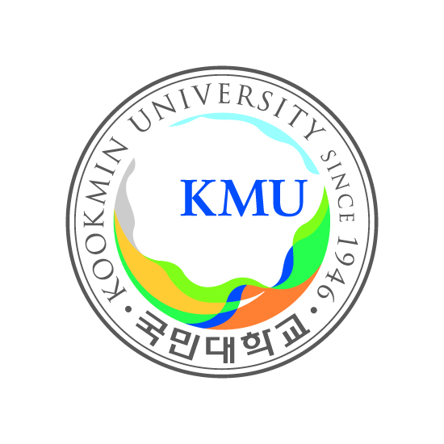
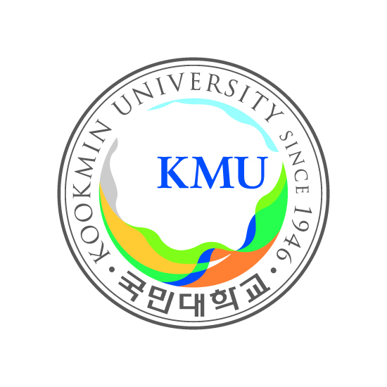

이상우
생년월일: 1999년 4월 10일
출신고등학교:
신일고등학교
재학중인 학교: 국민대학교(2학년)

전공:
빅데이터경영통계전공
소프트웨어혁명 강의를 들으면서 느낀점:
1학년 때 파이썬을 처음 접하게 되어서 이후 교양수업 때 다시 파이썬을 배우게 되어서 정말 기대되고 설렜습니다. 파이썬 문법 뿐만아니라 알고리즘, html,css,javascript 등 안배웠던 프로그래밍의 분야 까지 배우게 되어서 정말 뜻깊은 강의였던 것 같습니다! 남은 시간 동안 더욱더 새로운 지식들을 얻고 여러가지를 시도해 볼 수 있는 계기가 되었으면 좋겠습니다!
 
